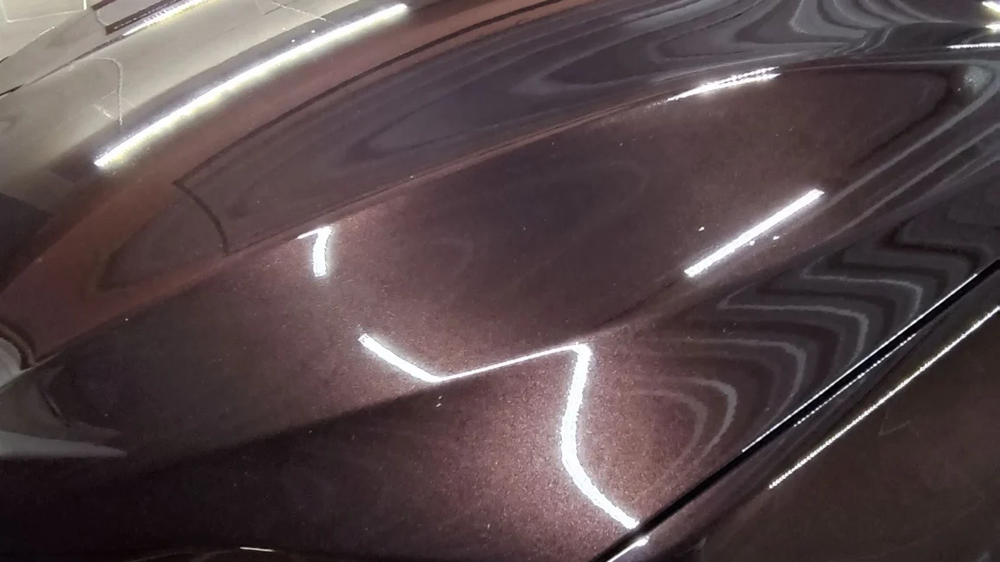
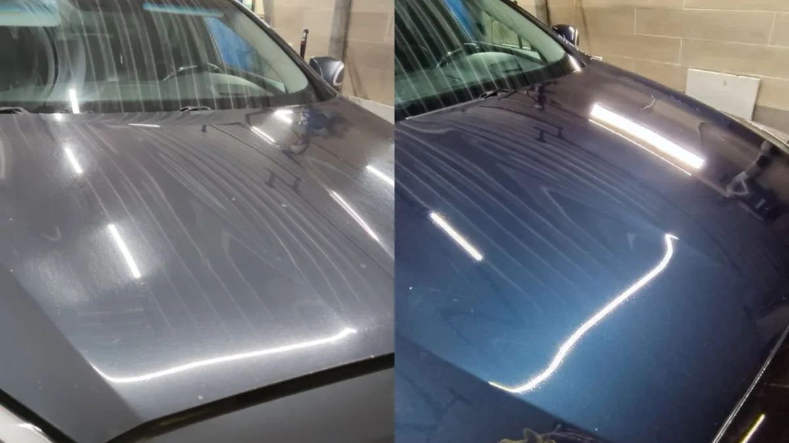
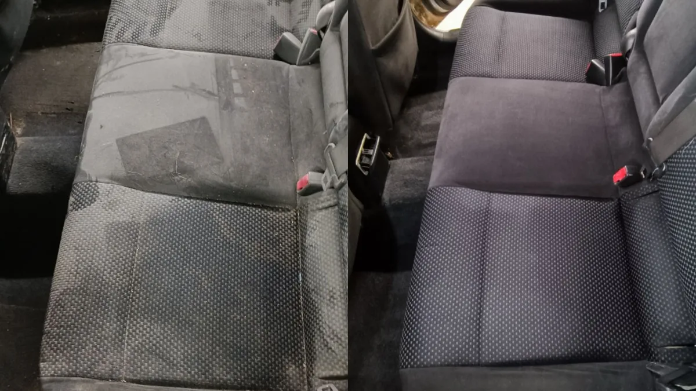
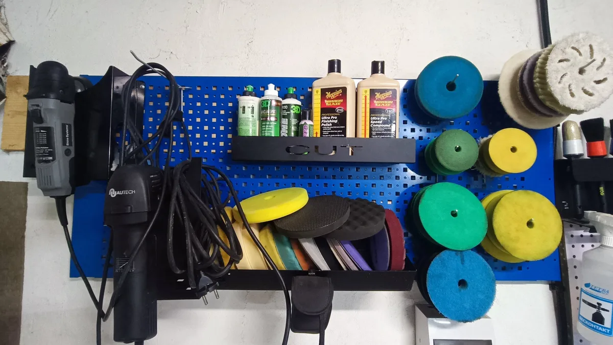

Детейлинг-студия в Обнинске · территория ГК Полёт, 2/33
Детейлинг в Обнинске: полировка, керамика, химчистка салона
Студия Detailers Brothers: полировка кузова и фар, керамика и жидкое стекло, химчистка салона с озонацией. Цену и срок называют до начала работ. Запись на время по будням, подтвердим в WhatsApp или по звонку.
- 5,0 на Яндекс Картах, 62 отзыва
- Цена и срок - до начала работ
- Пн-пт 09:00-20:00, суббота и воскресенье выходные

Услуги детейлинга Detailers Brothers в Обнинске
Что входит в услуги
- Полировка кузова: лёгкая и восстановительная, удаление голограмм и жёлтых пятен на кузове
- Защитные покрытия: керамика для кузова и фар, жидкое стекло, антидождь, керамика для кожи салона
- Химчистка салона: сиденья, потолок, руль, пластик, алькантара; химчистка для кожи, замши и детских колясок
- Озонация салона и сухой туман для удаления запахов
- Мойка двигателя паром и чистка подкапотного пространства
- Комплексы: полировка, керамика и химчистка салона за один заезд
Запись, адрес и оплата
- Запись по будням с 09:00 до 20:00, суббота и воскресенье выходные
- Адрес: территория ГК Полёт, 2/33, Обнинск, от Университетской улицы 330 м
- Оплата картой, сумму называют до начала работ
Цены на детейлинг в Обнинске: полировка, керамика, химчистка
На карточке студии цен нет. Сумму называют до начала работ, она зависит от марки, размера и состояния автомобиля.
Кузов и фары
- Полировка кузова автомобиля (лёгкая и восстановительная)уточнить
- Керамическое покрытие кузовауточнить
- Жидкое стекло для кузовауточнить
- Полировка фар и керамика для фаруточнить
- Антидождь на стёклауточнить
Салон и подкапотное пространство
- Химчистка салона автомобиляуточнить
- Химчистка потолка и руляуточнить
- Озонация салонауточнить
- Керамика для кожи салонауточнить
- Мойка двигателя паром и подкапотное пространствоуточнить
Цен на карточке в Яндекс Картах нет, точную сумму называют до начала работ. Оплата картой.
Как записаться на детейлинг в Обнинске
- 01
Выбрали услугу и время
Укажите услугу, день и час в форме на сайте - запись уйдёт в WhatsApp. Марку автомобиля напишите в сообщении.
- 02
Согласовали сумму и срок
Мастер называет стоимость и срок для вашего автомобиля. Время подтверждаем в WhatsApp или по звонку: +7 (930) 847-22-22.
- 03
Автомобиль в работе
Полировка, керамика, химчистка салона или комплекс. Срок согласовывают при сдаче машины.
- 04
Выдача автомобиля
Осматриваете результат на месте. После химчистки салон выдают сухим. Оплата картой.
Фото работ Detailers Brothers в Обнинске: полировка капота, химчистка салона, оборудование студии



Почему выбирают Detailers Brothers в Обнинске
Цена и сроки как договорились
«Прекрасное отношение к работе и соответствие озвученной стоимости так же как и сроков выполнения работ» - Gennady Bazhin, 3 февраля.
Без задержек
«Сроки те, о которых говорилось при сдаче машины - без задержек» - Anastasia Udalova, 4 июля.
Без лишних допов
«Полное отсутствие ненужных накрученных допов и втюхиваний услуг» - Светлячок, 6 апреля 2024.
Сложные пятна в салоне
«Вывели с алькантары трудное пятно, испорченное в другом салоне» - Юлия К., 17 июля 2024.
Отзывы о детейлинге Detailers Brothers в Обнинске
«Обратился в данное место по вопросу химчистки салона. В наше время довольно часто сталкиваешься с не особо качественным предоставлением услуг, люди пытаются схалтурить, натура видимо у нас такая. И даже если обратиться в не самое дешевое место- результат может не всегда порадовать. Здесь же - совсем не эта история. Мастер - знаток своего дела, да и просто человек хороший, принципиальный, делает все на совесть и по вполне разумной, не заоблачной цене. Однозначно рекомендую данное место к посещению.»
Zakhar S. · 28 марта
«Почти не оставляю отзывов, но тут приятно удивило и отношение и результат. Обращался за легкой полировкой кузова и керамическим покрытием, а так же химчисткой потолка и руля. Результат очень радует, машинка блестит как леденец, аж светится. И цена приятная и работы в срок. Однозначно обращусь еще! Спасибо большое, развития вашему детейлингу!»
Янис Шахлович · 22 декабря 2025
«Отдавал машину на керамику кожи и антидождь. Как всегда выполнено на высоте. Обращался ранее по старому адресу а тут первый раз. Прекрасное отношение к работе и соответствие озвученной стоимости так же как и сроков выполнения работ.»
Gennady Bazhin · 3 февраля
Отзывы с карточки на Яндекс.Картах, без правок.
Частые вопросы о детейлинге в Обнинске
Сколько стоит детейлинг в Обнинске?
На карточке Detailers Brothers в Яндекс Картах цен нет. Сумма зависит от марки, размера и состояния автомобиля, её называют до начала работ.
Где в Обнинске сделать полировку кузова?
В студии Detailers Brothers на территории ГК Полёт, 2/33. Здесь делают лёгкую и восстановительную полировку, убирают голограммы и жёлтые пятна на кузове. Запись по будням с 09:00 до 20:00.
Чем керамика отличается от жидкого стекла?
И то и другое - защитные покрытия кузова. В студии наносят и керамику, и жидкое стекло. Какое покрытие подойдёт вашему автомобилю по цене и стойкости, подскажут при осмотре, после полировки кузова.
Сколько времени занимает химчистка салона?
Химчистку салона делают быстро, автомобиль выдают с сухим салоном. Точный срок зависит от состояния салона и набора услуг, его называют при записи.
Можно ли вывести старые пятна из салона?
Да, в студии выводят старые трудные пятна: на сиденьях, на алькантаре, следы цементной смеси в салоне. Что получится в вашем случае, скажут после осмотра.
Делаете ли полировку фар?
Да. В студии полируют фары и наносят на них керамическое покрытие, а также убирают жёлтые пятна на кузове. Фары полируют отдельно или вместе с кузовом.
Нужна ли озонация салона?
Озонация убирает запахи, но не заменяет химчистку, если в салоне есть источник загрязнения. В студии озонацию делают вместе с химчисткой. Нужна ли она вам, подскажут при записи.
С какими автомобилями работаете?
Среди автомобилей, которые обслуживали в студии: Kia Sorento Prime, Subaru, Toyota RAV4, Land Cruiser и Mitsubishi Lancer. Для вашей марки время и стоимость назовут при записи.
До скольки работает студия и где находится?
Студия работает с понедельника по пятницу с 09:00 до 20:00, суббота и воскресенье выходные. Адрес: территория ГК Полёт, 2/33, Обнинск, в 330 м от Университетской улицы.
Как записаться на детейлинг и чем оплатить?
Выберите услугу, день и время в форме на сайте - запись откроется в WhatsApp. Можно позвонить: +7 (930) 847-22-22. Оплата картой.
Запишитесь на полировку, керамику или химчистку салона в Обнинске
- Адрес
- территория ГК Полёт, 2/33, Обнинск
- Часы
- пн-пт 09:00-20:00, сб и вс выходные
- Телефон
- +7 (930) 847-22-22